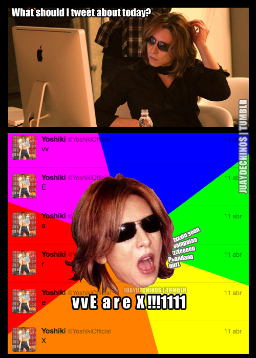

J-Rock Exposed: No SNS
Management's biggest fear is for them to craft a godly persona for their artist -- only for it to be tarnished by their overly flirtatious, or drunkenly tweeting money-maker. Occassionally, scandals are had on the app LINE or via Twitter photos and blogs. (The most artists had before hopping on social media was an ameblo, and even that was a very clean diary promoting their shows.)
No SNS
See more relevant things:
